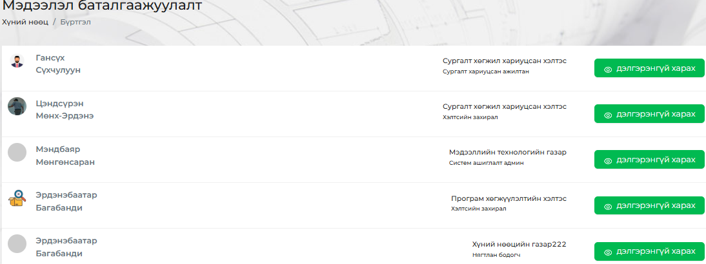
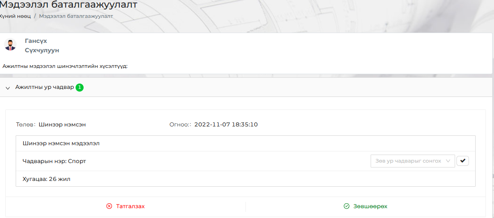

<h2 style="background-color: skyblue;">Мэдээлэл баталгаажуулалт</h2>
<p><div style="display: flex; justify-content: center; align-items: center;">
    
</div></br>
Энэ цэс нь ажилтны миний булан цэсээс өөрийн мэдээллээ шинчлэх хүсэлтийг хянах цэс юм.</br>
<br><div style="display: flex; justify-content: center; align-items: center;">
    
</div></br>
Дэлгэрэнгүйг харах дээр дарж шинэчлэх хүсэлтийг хүлээн авна.